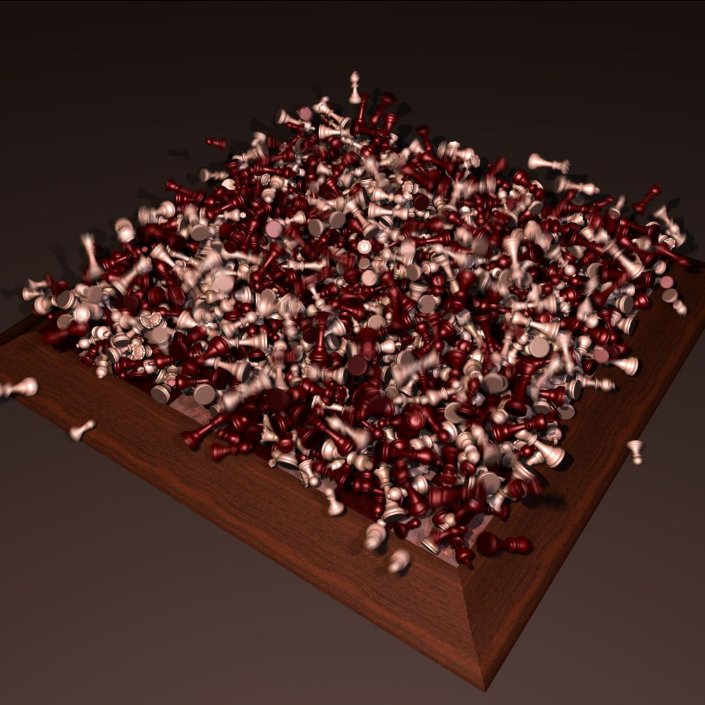
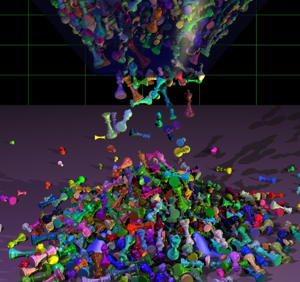
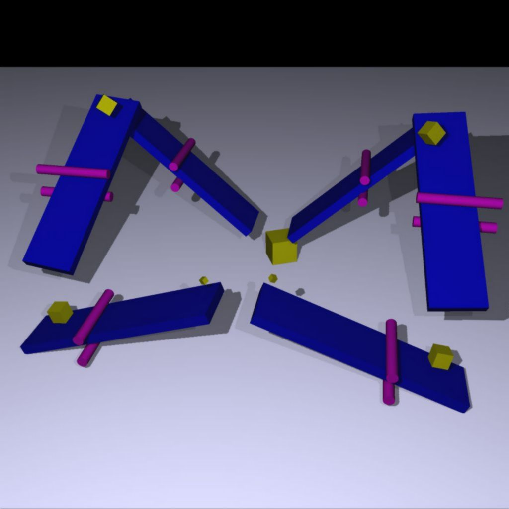
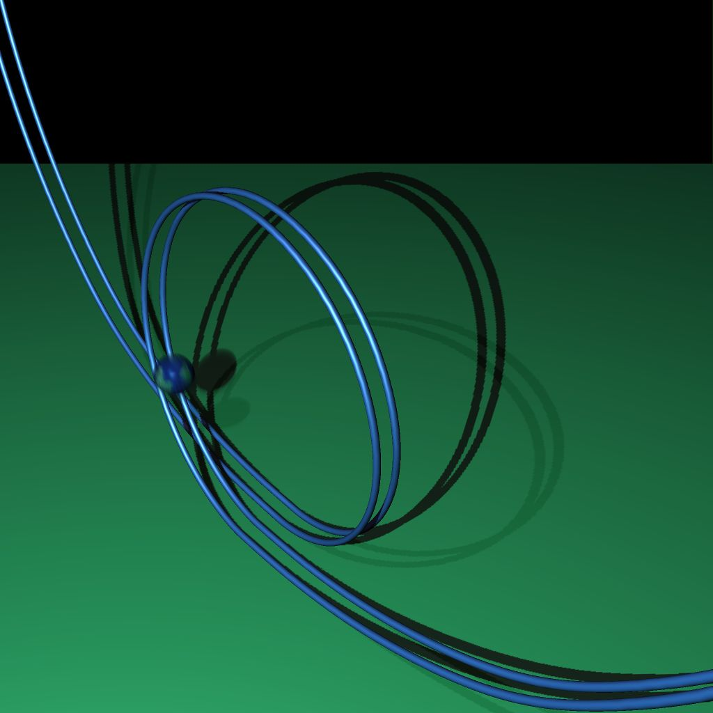
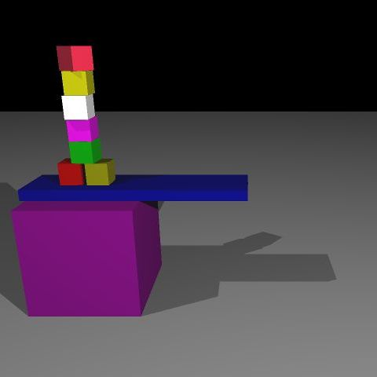
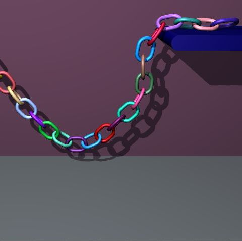

We
describe an efficient algorithm
for the simulation of large sets of
non-convex rigid bodies. The algorithm finds a simultaneous solution
for a multi-body system that is linear in the total number of contacts
detected in each iteration. We employ a novel contact model that uses
mass, location, and velocity information from all contacts, at the
moment of maximum compression, to constrain rigid body velocities. We
also develop a new friction model in the configuration space of rigid
bodies. These models are used to compute the feasible velocity and the
frictional response of each body. Implementation is simple and leads to
a fast rigid body simulator that computes steps on the order of seconds
for simulations involving over one thousand non-convex objects in high
contact configurations.
|  |  |
|  |  |
|  |  |